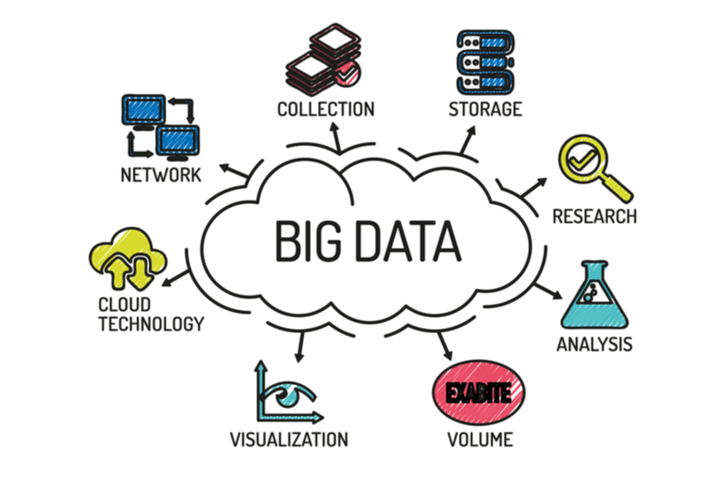
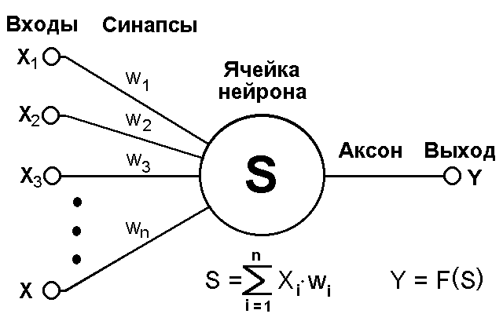
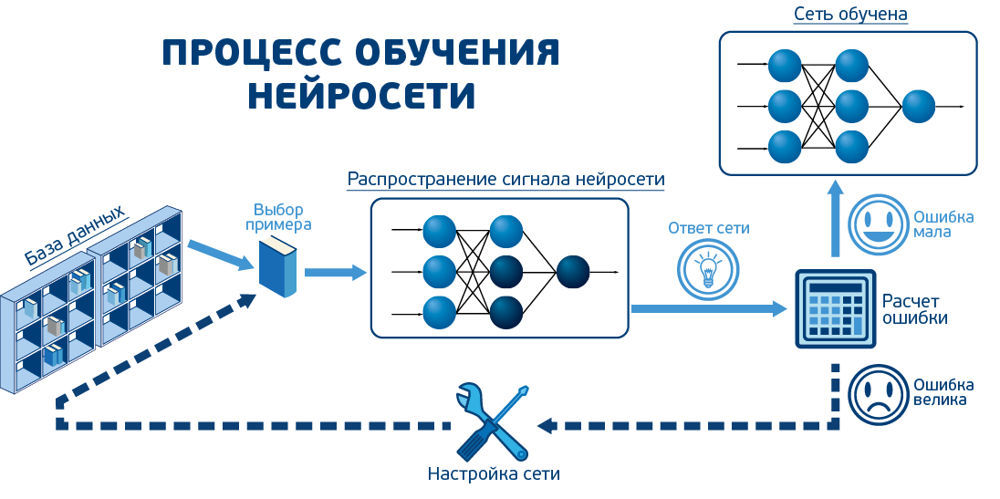

Ещё сравинительно недавно ученые в облатси информационных технологий точно знали - будущее стоит за данными! Big data, что на русском языке означает большие данные, уже называют "НОВОЙ НЕФТЬЮ". В мире создано огромное количества хранилищ данных, которые давно стоят переполненные.
Сами по себе эти данные мало что могут дать, а большинство из них могут вообще показаться натуральным мусором, то есть никакой пользы не нести, а просто занимать драгоценное место. Не так давно ученые-инженеры обнаружили, что из огромной массы этих с виду "бесполезных" данных можно получить массу пользы. Понимать как прошли некоторые события, что стало причиной их появления, устанавливать неочевидные закономерности, и самое главное - предсказывать будущее!
Использование больших данных помогает крупным компаниям предугадывать как движение рынка, так и желания отдельного клиента. Что приносит таким корпорациям огромный плюс к доходам.
Для извлечения пользы из огромного массива данных необходимо его правильно обработать. К сожалению, человек чисто физически не имеет возможности вручную это сделать, да ещё за короткий срок, какими бы ни были его навыки, образование и способности. На помощь приходят новейшие технологии - современная искусственная нейросеть и грамотный алгоритм обучения, составляемый опытными специалистами, что даёт на выходе настоящий искуственный интеллект(ИИ).
В мире называется data mining. Мы используем новейшие технологии по сбору данных, что позволяет быстро находить самые актуальные data-сеты, иными словами пачки данных, что, в свою очередь, повышает правильность прогнозов. Внимание, все данные деперсонализированны и вычислить по ним конкретного пользователя невозможно, будьте уверены - ваши данные в безопасности.
Нейросеть играет роль основы для создания искусственного интеллекта подобно нашему мозгу, который организовывает мыслительный процесс, а именно принимает данные с органов чувств, обрабатывает, запоминает, делает выводы. В искусственной нейронной сети этот процесс примерно тот же.
На вход нейросети подаются сигналы, каждый из которых умножается на свой вес. Все эти произведения суммируются в нейроне, на выходе получается результат обработки нескольких сигналов. Нейросеть связывает десятки и даже сотни тысяч нейронов. В нейросети создаются ассоциации исходя из полученных данных. Опираясь на построенные ассоциации, машина, получая новые данные, способна сделать конкретные выводы и даже предсказать будущее.
Нематериальная сущность машины, способная принимать решения и создаваемая в процессе обучения нейросети называется искусственным интеллектом
Процесс обучения машины очень похож на обучение школьников. Даётся ранее незнакомая информация, ученики строят ассоциации с тем, что уже знакомо, а потом, по мере поступления новой информации, корректируют свои выводы об изученной предмете. Например, ученики отлично усвоили тему урока математики "синус", теперь покажем график косинуса. С первого взгляда, функции одинаковые, у учащихся сразу возникла твёрда ассоциация с синусом, но чуть позже, когда более внимательно смотрят на график, понимают различие - графики относительно друг-друга смещены на П/2.
Качество прогнозов и правильность выводов, которые делает ИИ, зависит от качества обрабатываемых данных и правильности алгоритма обучения. Таким образом, если вы покажете нарисованный от руки кривой график, который более похож на горный пейзаж, ученики с большей вероятностью сделают неверные выводы. Поэтому качество и "чистота" используемых баз данных довольно сильное подспорье при обучении ИИ.
Мы используем данные технологии для предсказания волатильности рынка, что позволит вам сделать более правильный выбор при покупки активов или валюты.